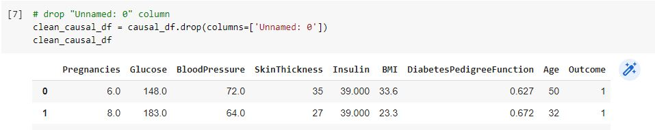

Conventional or traditional ML learns patterns and correlations, they are suitable for production but not for decision making. What's suitable for decision making are causal inference and A/B testing. When it comes to making decision we need to know "why" of the subject. A lot of time testing is just not possible and we don't always know why something is happening. It could be cost saving, no test subject, or we just don't have data to analyze. Machine unable to learn the patterns of an experimental model, even if it could learn the pattern, extrapolation is something that we never knew. The purpose of Causal Analysis is to estimate the effect of an intervention on the outcome. Like the title said "I do, therefore I am".
Imagine that you want to lose weight, you decided to do the 16/8 intermittent fasting. The outcome is your body weight with the intermittent fasting plan that you use as your treatment, but what if you choose to use different intermittent fasting plan instead? Would there be any effect? We cannot go back in time and treat you with different intermittent fasting plan. This is why we do Causal Analysis and not machine learning prediction. We don't have any data on the different fasting plan; therefore we cannot train the machine.
In this part of project, we are going to use Microsoft's doWhy package to run out test. We are going to use the Pima Indian diabetest dataset that we clean up previously.
There are four steps in DoWhy package that completes the Causal Analysis, they are as follow:
1. Model
2. Identify
3. Estimate
4. Refute
in Model part it's pretty straightforward, we create causal model using CausalModel module. The Identify step, we define the Treatment affecting the Outcome and verify if everything else is contant, would changing of the treatment affect the otcome? The Estimate part, we estimate how strong the treatment is to the outcome. Finally the Refute part, we validate an effect estimate from a causal estimator.
Naturally after learning the pattern of the Pima Indian population, the next question would be, why so many of the Pima Indian females are diabetic? Of course due to limitation of the availability of our dataset, we can only ask questions that we can answer using features in the dataset. Here's the question:
“Would obesity affecting the diabetes status?”
Our null hypothesis would be yes obesity is affecting the diabetes status and alternative hypothesis would be no, obesity is not a factor. Let's get to work!
Table 1 Install DoWhy package

Table 2 Install icecream package
Table 3 Import dependencies
Table 3 Import dependencies and print the result using icecream

Table 4 Drop "Unnamed: 0" column
Table 5 Gathering data related to our hypothesis
Our hypothesis is to test whether obesity is affecting diabetes status. I used the "BMI" column as my index column, everyone that's over 30 I classificed them and marked them as obese. I then created a column name "Obese" and input that data. Now we have our "treatment" and we have our "Outcome".
First thing first, let's create our diagram model which contains our assumptions. The DoWhy package will use this assumptions to analyze the causal effect. So, it's a very important step, like the old saying, garbage in garbage out if you don't get it right.
Table 6 Causal diagram
These are some assumptions that I can think of, I would advice you to work with your domain expert to get it accurate. There are a lot of confounders that could potentially impact the correlations of our diagram, we need to include and account for all of them. So, here are some of my assumptions:
1. For Pima Indian female, as they age, their diabetic gene may be turn on. Age has something to do with their pedigree as well.
2. As we all know, a lot of people as they get older they tend to have higher blood pressure.
3. As we aged, our metabolism started to slow down and we started to gain weight and because we still eat the same amount of food, we started to gain weight and become obese.
4. Pregnancy can have effect on blood sugar.
5. If our blood sugar level increase, our insulin level also increase with it.
6. A lot of women tend to gain weight after pregnancy.
7. Pregnancy can cause high/low blood pressure, increase skin thickness, and cause blood sugar to go up or down.
8. Obesity is the cause of diabetes, pregnancies also could be the cause, may be not directly but as a confounder.
9. Obese people tend to have high blood pressure, higher BMI index, and higher skin thickness measurement.
Table 7 Causal graphic model
It is time to identify the treatment effect on the outcome. In our case, we want to know if Obesity (treatment) is the cause of Diabetes (Outcome).
Table 8 Identify causal effect
In Table 8, we see the description "Unconfoundedness" and the DoWhy assume that U is causing Obese and U is also causing Diabetes, then probability of Obese, Pregnancies, and U given Diabetes is positive is equal to probability of Obese and Pregnancies given Diabetes is positive. In another word, DoWhy is ignoring U in the process. It's picking up Obesity and Pregnancies as 2 main factors, which is good!
In this stage, we're trying to understand the treatment's causal effect on the outcome. The Estimate process is based on the change in the value of the treatment variable while other variables are set to constant. You will see how this is done in the next section. How strong the effect is a matter of which kind of statistical estimation we are using. For the list of estimation methods, please visit Github's Methods For Causal Inference Part II.
Table 9 Estimate causal effect
Let's get some terms clarified. ATE meaning Average Treatment Effect, it's just the mean treatment effect. Backdoor is a term in do-calculus meaning it's not a direct path to the result. In another word through indirect path to Diabetes end result, we have to go through Pregnancies and possibly Unconfoundedness in order to get to the Outcome, that's why it is called backdoor.
From the result above, we obtain the mean estimate is 0.27884, it is equivalent to saying that the probability of becoming Diabetes is increased by 27.9% when the Pima Indian female is Obese and Pregnant. Wow, that is a high probability!
In this part of analysis, we want to challenge the obtained estimands. The reason we're challenging the estimands is that the causality itself is not based on the data. It's based on my assumptions (Table 6 and 7). We can apply some changes here to test the causality. We can replace the estimands using placibo and then test the causality. We can replace the estimands with some randome variables and test the causality.
We are going to use "random common cause" as our variables to test the causality. We can't use placibo here because it requires more than 2 categories of data in our treatment column which we only have Obese or not Obese.
Table 10 Random common cause
Table 11 Refute result
If the assumption was correct (table 6 and 7), the estimation should not change much even after adding some random effect. The reason being, these are independent variables that's not part of the causal model they should not have any effect on the model. Indeed, the estimated and new effect both were almost identical: 0.2788 and 0.2786. P value of 0.439 confirms that they are both within the model's confidence interval.
Causal Analysis is a statistical experimental analysis to establish cause and effect. Its main purpose is to locate the root cause of an outcome and its causes. Causal Analysis is essentially different from the machine learning prediction. In machine learning we try to learn patterns of a problem and come up with model and use the model to predict an outcome. Causal Analysis on the other hand, approaches a treatment's effect based on the counterfactual or the data that do not exist. It doesn't predict anything.
In our Pima Indian case, we learned that Pregnancies and Obesity are the 2 main causes of Diabetes. The model further clarified that Pregnancies causes Obesity and then Obesity causes Diabetes.
The model assumption part you should get your domain expert involve so that you don't waste too much time in guessing. Thank you for reading!